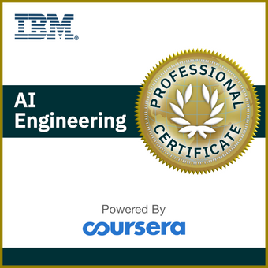

In this project, he likelihood of the person having a bank account or not for
each unique ID in the test dataset was predicted using python. The model was
trained on 70% of the data and tested on the final 30% of the data. The dataset
consisted of demographic information and details on financial services used by
approximately 33,600 individuals across Kenya, Rwanda, Tanzania, and Uganda. This
data was extracted from various Finscope surveys conducted between 2016 to 2018.
Loading, cleaning, and visualizing of scraped Google Play Store data to gain insights into the Android app market.
Developing a function that take Zillow property url as input and produce data frames of scraped information as output.

Application of the foundational Python skills I learned in Introduction to Python and Intermediate Python by
manipulating and visualizing movie and TV data.
This is an Honour Project. It involved building a rainfall prediction classifier using machine learning
algorithms. The classifier was developed by leveraging a rainfall dataset from the Australian Government's
Bureau of Meteorology, and applying data preprocessing techniques to ensure data quality. Several
classification algorithms were employed to train and evaluate the models.

This is a course project, I built a regression model using the deep learning Keras library, and then
experiment it with increasing the number of training epochs and changing number of hidden layers and
see how changing these parameters impacts the performance of the model.

Machine Learning with Python, IBM Skills Network Final assignment.

This holds all my Tableau Project